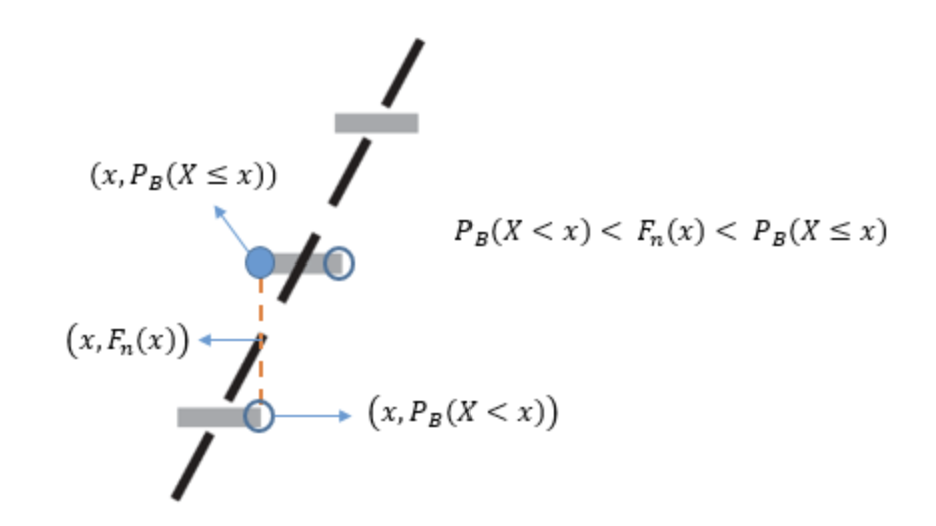

第 7 章 渐进理论初步
7.0.0.1 几乎必然收敛
Definition 7.1. 设\(\{f_n\}\)和\(f\)是概率空间\((X,\mathscr{F},P)\)上的\(m\)维随机向量，\(\rho\)是\(\mathbb{R}^{m}\)上的距离。若：
\[\begin{equation*} P\left(\left\{\lim_{n\to+\infty}\rho(f_n,f)\ne0\right\}\right)=0 \end{equation*}\]
则称\(\{f_n\}\)几乎必然收敛到\(f\)，记作\(f_n\overset{\text{a.s.}}{\longrightarrow}f\)。
7.0.0.2 依概率收敛
Definition 7.2. 设\(\{f_n\}\)和\(f\)是概率空间\((X,\mathscr{F},P)\)上的\(m\)维随机向量，\(\rho\)是\(\mathbb{R}^{m}\)上的距离。如果对任意的\(\varepsilon>0\)都有：
\[\begin{equation*} \lim_{n\to+\infty}P(\{\rho(f_n,f)\geqslant\varepsilon\})=0 \end{equation*}\]
则称\(\{f_n\}\)依概率收敛（convergent in probability）到\(f\)，记为\(f_n\overset{P}{\longrightarrow}f\)。
7.0.0.3 依分布收敛
Definition 7.3. 对非降实值函数\(\{f_n\}\)和\(f\)，若对\(f\)的每一个连续点\(x\)有：
\[\begin{equation*} \lim_{n\to+\infty}f_n(x)=f(x) \end{equation*}\]
则称\(f_n\)弱收敛于\(f\)，记作\(f_n\overset{w}{\longrightarrow}f\)。
Definition 7.4. 设\(\{f_n\sim F_n\}\)是概率空间\((X,\mathscr{F},P)\)上的\(m\)维随机向量序列，\(F\)是一个\(m\)维分布函数。若\(F_n\overset{w}{\longrightarrow}F\)，则称\(\{f_n\}\)依分布收敛（convergent in distribution），记为\(f_n\overset{d}{\longrightarrow}F\)。若此时概率空间\((X,\mathscr{F},P)\)上的\(m\)维随机向量\(f\sim F\)，则称随机向量序列\(\{f_n\}\)依分布收敛到\(f\)，记为\(f_n\overset{d}{\longrightarrow}f\)。
引理 8.1 Lemma 7.1. 设\(\{f_n\}\)和\(f\)分别是概率空间\((X,\mathscr{F},P)\)上的\(m\)维随机向量序列和\(m\)维随机向量，则以下叙述等价：
\(f_n\overset{d}{\longrightarrow}f\)；
对任意\(\mathbb{R}^{m}\)上的有界连续函数\(g\)有：
\[\begin{equation*} \lim_{n\to+\infty}\operatorname{E}[g(f_n)]=\operatorname{E}[g(f)] \end{equation*}\]
对任意\(\mathbb{R}^{m}\)上的有界Lipschitz连续函数\(g\)有：
\[\begin{equation*} \lim_{n\to+\infty}\operatorname{E}[g(f_n)]=\operatorname{E}[g(f)] \end{equation*}\]
对任意\(\mathbb{R}^{m}\)上的非负连续函数\(g\)有：
\[\begin{equation*} \varliminf_{n\to+\infty}\operatorname{E}[g(f_n)]\geqslant\operatorname{E}[g(f)] \end{equation*}\]
对任意\(\mathbb{R}^{m}\)上的开集\(E\)有：
\[\begin{equation*} \varliminf_{n\to+\infty}P(f_n\in E)\geqslant P(f\in E) \end{equation*}\]
对任意\(\mathbb{R}^{m}\)上的闭集\(E\)有：
\[\begin{equation*} \varlimsup_{n\to+\infty}P(f_n\in E)\leqslant P(f\in E) \end{equation*}\]
对任意满足\(P(f\in\partial E)=0\)的\(E\in\mathcal{B}(\mathbb{R}^{m})\)，有：
\[\begin{equation*} \lim_{n\to+\infty}P(f_n\in E)=P(f\in E) \end{equation*}\]
Theorem 7.1. 设\(\{f_n\}\)和\(f\)为测度空间\((X,\mathscr{F},\mu)\)上的可测函数，则：
\(f_n\overset{P}{\longrightarrow}f\)可推出\(f_n\overset{d}{\longrightarrow}f\)；
当\(f\)为常值函数时，\(f_n\overset{P}{\longrightarrow}f\iff f_n\overset{d}{\longrightarrow}f\)
证明. (1)记\(F\)为\(f\)的分布函数，\(F_n\)为\(f_n\)的分布函数。因为\(f_n\overset{P}{\longrightarrow}f\)，所以对任意的\(\varepsilon>0\)，有：
\[\begin{equation*} \lim_{n\to+\infty}P(|f_n-f|\geqslant\varepsilon)=0 \end{equation*}\]
对任意的\(x\in X\)、任意的\(\varepsilon>0\)和任意的\(n\in \mathbb{N}^+\)，由性质 5.2.1(3)（次有限可加性，单调性）可得：
\[\begin{align*} F_n(x)&=P(f_n\leqslant x) \\ &\leqslant P(f_n\leqslant x,|f_n-f|<\varepsilon)+P(f_n\leqslant x,|f_n-f|\geqslant\varepsilon) \\ &\leqslant P(f\leqslant x+\varepsilon)+P(|f_n-f|\geqslant\varepsilon) \end{align*}\]
第二行到第三行第一式的变化是因为：
\[\begin{equation*} \{|f_n-f|<\varepsilon\}\subseteq\{f<f_n+\varepsilon\},\quad\{f_n\leqslant x\}\cap\{|f_n-f|<\varepsilon\}\subseteq\{f<x+\varepsilon\} \end{equation*}\]
由性质 3.2.9(6)(8.b)可得：
\[\begin{equation*} \lim_{n\to+\infty}F_n(x)\leqslant P(f<x+\varepsilon)+\lim_{n\to+\infty}P(|f_n-f|\geqslant\varepsilon)=P(f<x+\varepsilon) \end{equation*}\]
由\(\varepsilon\)的任意性可得：
\[\begin{equation*} \lim_{n\to+\infty}F_n(x)\leqslant F(x) \end{equation*}\]
对任意的\(x\in X\)、任意的\(\varepsilon>0\)和任意的\(n\in \mathbb{N}^+\)，由性质 5.2.1(3)（次有限可加性，单调性）可得：
\[\begin{align*} P(f\leqslant x-\varepsilon)&\leqslant P(f\leqslant x-\varepsilon,|f_n-f|<\varepsilon)+P(f\leqslant x-\varepsilon,|f_n-f|\geqslant \varepsilon) \\ &\leqslant P(f_n<x)+P(|f_n-f|\geqslant\varepsilon)\leqslant P(f_n\leqslant x)+P(|f_n-f|\geqslant\varepsilon) \end{align*}\]
由性质 3.2.9(6)(8.b)可得：
\[\begin{equation*} P(f\leqslant x-\varepsilon)\leqslant\lim_{n\to+\infty}P(f_n\leqslant x)+\lim_{n\to+\infty}P(|f_n-f|\geqslant\varepsilon)=\lim_{n\to+\infty}F_n(x) \end{equation*}\]
于是：
\[\begin{equation*} P(f\leqslant x-\varepsilon)\leqslant\lim_{n\to+\infty}F_n(x) \end{equation*}\]
若\(F(x)\)在\(x\)处连续，就有：
\[\begin{equation*} \lim_{\varepsilon\to0}P(f\leqslant x-\varepsilon)=\lim_{\varepsilon\to0}F(x-\varepsilon)=F(x) \end{equation*}\]
由性质 3.3.3(4)可知：
\[\begin{equation*} F(x)\leqslant\lim_{n\to+\infty}F_n(x) \end{equation*}\]
所以在\(F\)的连续点\(x\)处有：
\[\begin{equation*} \lim_{n\to+\infty}F_n(x)=F(x) \end{equation*}\]
即\(f_n\overset{d}{\longrightarrow}f\)。
(2)设\(f=c\)且\(f_n\overset{d}{\longrightarrow}f\)，对任意的\(\varepsilon>0\)，由性质 5.2.1(1)(3)（单调性）(2)可得：
\[\begin{align*} &P(\{|f_n-f|\geqslant\varepsilon\})=P(\{f_n\geqslant f+\varepsilon\})+P(\{f_n\leqslant f-\varepsilon\}) \\ &\leqslant P\left(\left\{f_n>f+\frac{\varepsilon}{2}\right\}\right)+P(\{f_n\leqslant f-\varepsilon\})=1-F_n\left(c+\frac{\varepsilon}{2}\right)+F_n(c-\varepsilon) \end{align*}\]
因为\(f\)为常值函数，所以\(F\)在除\(c\)点以外的点都连续。由依分布收敛的定义和分布函数的右连续性可得：
\[\begin{equation*} \lim_{\varepsilon\to0+}\left[\lim_{n\to+\infty}F_n\left(c+\frac{\varepsilon}{2}\right)\right]=F(c)=1,\quad\lim_{\varepsilon\to0+}\left[\lim_{n\to+\infty}F_n(c-\varepsilon)\right]=0 \end{equation*}\]
根据性质 3.2.9(6)(8.b)、性质 3.3.3(4)和测度的非负性可得：
\[\begin{equation*} \lim_{n\to+\infty}P(\{|f_n-f|\geqslant\varepsilon\})=0 \end{equation*}\]
即\(f_n\overset{P}{\longrightarrow}f\)。结合(1)即可得出结论。 ◻
Theorem 7.2. （Scheffe Theorem）
设\(\{f_n\}\)是测度空间\((X,\mathscr{F},\mu)\)上的可积函数列，\(f\)是\((X,\mathscr{F},\mu)\)上的可积函数，\(f_n\overset{a.e.}{\longrightarrow}f\)，则
Property 7.0.3. 设\((X,\mathscr{F},P)\)为概率空间，\(\{f_n\},\{g_n\},\{h_n\}\)和\(f,g\)分别是其上的随机变量列和随机变量，其中\(f_n\overset{P}{\longrightarrow}f,\;g_n\overset{P}{\longrightarrow}g\)，\(\{h_n\}\)也是一个实数列，\(a,b\in\mathbb{R}^{}\)，则：
若\(h_n\to a\)，则\(h_n\overset{P}{\longrightarrow}a\)；
\(f_n\pm g_n\overset{P}{\longrightarrow}f\pm g\)；
\(f_ng_n\overset{P}{\longrightarrow}fg\)；
若\(P(\{g=0\})=0\)，则\(\dfrac{f_n}{g_n}\overset{P}{\longrightarrow}\dfrac{f}{g}\)。
证明. (1)由数列极限的定义，对任意的\(\varepsilon>0\)，存在\(N\in\mathbb{N}^+\)，当\(n>N\)时有\(|h_n-a|<\varepsilon\)，即\(P(\{|h_n-a|\geqslant\varepsilon\})=0\)，也即\(h_n\overset{P}{\longrightarrow}a\)。
(2)若\(|f_n-f|<\dfrac{\varepsilon}{2}\)且\(|g_n-g|<\dfrac{\varepsilon}{2}\)，由绝对值不等式可得：
\[\begin{equation*} |f_n\pm g_n-(f\pm g)|\leqslant|f_n-f|+|g_n-g|<\varepsilon \end{equation*}\]
所以有：
\[\begin{equation*} \left\{|f_n-f|<\frac{\varepsilon}{2}\right\}\cap\left\{|g_n-g|<\frac{\varepsilon}{2}\right\}\subseteq\{|f_n\pm g_n-(f\pm g)|<\varepsilon\} \end{equation*}\]
根据性质 5.1.1(7)即：
\[\begin{equation*} \{|f_n\pm g_n-(f\pm g)|\geqslant\varepsilon\}\subseteq\left\{|f_n-f|\geqslant\frac{\varepsilon}{2}\right\}\cup\left\{|g_n-g|\geqslant\frac{\varepsilon}{2}\right\} \end{equation*}\]
于是对任意的\(\varepsilon>0\)有：
\[\begin{equation*} \{|f_n\pm g_n-(f\pm g)|\geqslant\varepsilon\}\subseteq\left\{|f_n-f|\geqslant\frac{\varepsilon}{2}\right\}\cup\left\{|g_n-g|\geqslant\frac{\varepsilon}{2}\right\} \end{equation*}\]
根据性质 5.3.3(5)(2)可知上述集合都是可测集，由性质 5.2.1(3)（单调性，次有限可加性）和性质 3.2.9(8.b)可得：
\[\begin{equation*} P(\{|f_n\pm g_n-(f\pm b)|\geqslant\varepsilon\})\leqslant P\left(\left\{|f_n-f|\geqslant\frac{\varepsilon}{2}\right\}\right)+P\left(\left\{|g_n-g|\geqslant\frac{\varepsilon}{2}\right\}\right)\to0 \end{equation*}\]
根据测度的非负性即\(f_n\pm g_n\overset{P}{\longrightarrow}f\pm g\)。
(2)先证\(f=g=0\)时的情况。对任意的\(\varepsilon>0\)，当\(f_n<\sqrt{\varepsilon},g_n<\sqrt{\varepsilon}\)时，\(f_ng_n<\varepsilon\)，所以有：
\[\begin{equation*} \{|f_n|<\sqrt{\varepsilon}\}\cap\{|g_n|<\sqrt{\varepsilon}\}\subseteq\{|f_ng_n|<\varepsilon\} \end{equation*}\]
由性质 5.1.1(7)即：
\[\begin{equation*} \{|f_ng_n|\geqslant\varepsilon\}\subseteq\{|f_n|\geqslant\sqrt{\varepsilon}\}\cup\{|g_n|\geqslant\sqrt{\varepsilon}\} \end{equation*}\]
根据性质 5.2.1(3)（次有限可加性）和性质 3.2.9(8.b)可得：
\[\begin{equation*} P(\{|f_ng_n|\geqslant\varepsilon\})\leqslant P(\{|f_n|\geqslant\sqrt{\varepsilon}\})+P(\{|g_n|\geqslant\sqrt{\varepsilon}\})\to0 \end{equation*}\]
根据测度的非负性即\(f_ng_n\overset{P}{\longrightarrow}0\)。
对于一般的情况，注意到：
\[\begin{equation*} f_ng_n-fg=(f_n-f)(g_n-g)+f(g_n-g)+g(f_n-f) \end{equation*}\]
即：
\[\begin{equation*} |f_ng_n-fg|\leqslant|f_n-f||g_n-g|+|f||g_n-g|+|g||f_n-f| \end{equation*}\]
于是对任意的\(\varepsilon>0\)有：
\[\begin{equation*} \left\{|f_n-f||g_n-g|<\frac{\varepsilon}{3}\right\}\cap\left\{|f||g_n-g|<\frac{\varepsilon}{3}\right\}\cap\left\{|g||f_n-f|<\frac{\varepsilon}{3}\right\}\subseteq\{|f_ng_n-fg|<\varepsilon\} \end{equation*}\]
由性质 5.1.1(7)即：
\[\begin{equation*} \{|f_ng_n-fg|\geqslant\varepsilon\}\subseteq\left\{|f_n-f||g_n-g|\geqslant\frac{\varepsilon}{3}\right\}\cup\left\{|f||g_n-g|\geqslant\frac{\varepsilon}{3}\right\}\cup\left\{|g||f_n-f|\geqslant\frac{\varepsilon}{3}\right\} \end{equation*}\]
由性质 5.3.3(5)(2)可知上述集合都是可测集，根据性质 5.2.1(3)（单调性，次有限可加性）可得：
\[\begin{align*} P(\{|f_ng_n-fg|\geqslant\varepsilon\})&\leqslant P\left(\left\{|f_n-f||g_n-g|\geqslant\frac{\varepsilon}{3}\right\}\right)+P\left(\left\{|f||g_n-g|\geqslant\frac{\varepsilon}{3}\right\}\right) \\ &\quad+P\left(\left\{|g||f_n-f|\geqslant\frac{\varepsilon}{3}\right\} \right) \end{align*}\]
因为\(f_n\overset{P}{\longrightarrow}f,g_n\overset{P}{\longrightarrow}g\)，所以\(f_n-f\overset{P}{\longrightarrow}0,g_n-g\overset{P}{\longrightarrow}0\)，所以\((f_n-f)(g_n-g)\overset{P}{\longrightarrow}0\)，即：
\[\begin{equation*} \lim_{n\to+\infty}P\left(\left\{|f_n-f||g_n-g|\geqslant\frac{\varepsilon}{3}\right\}\right)=0 \end{equation*}\]
对给定的\(M>0\)，有：
\[\begin{align*} &\left\{|f||g_n-g|\geqslant\frac{\varepsilon}{3}\right\}=\left\{|f||g_n-g|\geqslant\frac{\varepsilon}{3}\right\}\cap X \\ =&\left\{|f||g_n-g|\geqslant\frac{\varepsilon}{3}\right\}\cap\Big\{\{|f|>M\}\cup\{|f|\leqslant M\}\Big\} \\ =&\Big\{\left\{|f||g_n-g|\geqslant\frac{\varepsilon}{3}\right\}\cap\{|f|>M\}\Big\}\cup\Big\{\left\{|f||g_n-g|\geqslant\frac{\varepsilon}{3}\right\}\cap\{|f|\leqslant M\}\Big\} \\ &\subseteq\{|f|>M\}\cup\left\{|g_n-g|\geqslant\frac{\varepsilon}{3M}\right\} \end{align*}\]
由性质 5.2.1(3)（单调性，次有限可加性）可得：
\[\begin{equation*} P\left(\left\{|f||g_n-g|\geqslant\frac{\varepsilon}{3}\right\}\right)\leqslant P(\{|f|>M\})+P\left(\left\{|g_n-g|\geqslant\frac{\varepsilon}{3M}\right\}\right) \end{equation*}\]
\[\begin{equation*} \lim_{n\to+\infty}P\left(\left\{|f||g_n-g|\geqslant\frac{\varepsilon}{3}\right\}\right)\leqslant P(\{|f|>M\}) \end{equation*}\]
同理可得：
\[\begin{equation*} \lim_{n\to+\infty}P\left(\left\{|g||f_n-f|\geqslant\frac{\varepsilon}{3}\right\}\right)\leqslant P(\{|g|>M\}) \end{equation*}\]
于是有：
\[\begin{equation*} \lim_{n\to+\infty}P(\{|f_ng_n-fg|\geqslant\varepsilon\})\leqslant P(\{|f|>M\})+P(\{|g|>M\}) \end{equation*}\]
对任意的\(M>0\)成立。因为\(f,g\)是随机变量，根据下确界的不等式性、测度的非负性和性质 3.2.9(6)可得：
\[\begin{equation*} \lim_{n\to+\infty}P(\{|f_ng_n-fg|\geqslant\varepsilon\})=0 \end{equation*}\]
即\(f_ng_n\overset{P}{\longrightarrow}fg\)。
(4) ◻
Theorem 7.3. （Slutsky Theorem）
设\(\{f_n\}\)和\(\{g_n\}\)是概率空间\((X,\mathscr{F},P)\)上的随机变量序列，\(f\)是\((X,\mathscr{F},P)\)上的随机变量，\(c\in\mathbb{R}\)。若：
\[\begin{equation*} f_n\overset{d}{\longrightarrow}f,\quad g_n\overset{P}{\longrightarrow}c \end{equation*}\]
则：
\(f_n+g_n\overset{d}{\longrightarrow}f+c\)；
\(g_nf_n\overset{d}{\longrightarrow}cf\)；
当\(c\ne0\)时，\(\dfrac{f_n}{g_n}\overset{d}{\longrightarrow}\dfrac{f}{c}\)。
证明. (1) ◻
Property 7.0.4. 设\((X,\mathscr{F},P)\)为概率空间，\(\{f_n\}\)和\(f\)分别是其上的随机变量列和随机变量，其中\(f_n\overset{d}{\longrightarrow}f\)，\(\{a_n\},\{b_n\}\)是一个实数列，\(a,b\in\mathbb{R}^{}\)，则：
- 若\(a_n\to a,b_n\to b\)，则\(a_nf_n+b_n\overset{d}{\longrightarrow}af+b\)；
证明. (1)由性质 7.0.3和定理 7.3(1)(2)立即可得。 ◻
Theorem 7.4. 设\(\{\mathbf{X_n}\}\)是概率空间\((X,\mathscr{F},P)\)上的\(p\)维随机向量序列，\(\mathbf{X}\)是\((X,\mathscr{F},P)\)上的\(p\)维随机向量，\(g\)是\((\mathbb{R}^{p},\mathcal{B}^p)\)到\((\mathbb{R}^{q},\mathcal{B}^q)\)上的可测函数，且\(g\;\)a.s连续于\((\mathbb{R}^{p},\sigma(g),P\mathbf{X}^{-1})\)，则：
\(\mathbf{X_n}\overset{a.s.}{\longrightarrow}\mathbf{X}\Rightarrow g(\mathbf{X_n})\overset{a.s.}{\longrightarrow}g(\mathbf{X})\)；
\(\mathbf{X_n}\overset{P}{\longrightarrow}\mathbf{X}\Rightarrow g(\mathbf{X_n})\overset{P}{\longrightarrow}g(\mathbf{X})\)；
\(\mathbf{X_n}\overset{d}{\longrightarrow}\mathbf{X}\Rightarrow g(\mathbf{X_n})\overset{d}{\longrightarrow}g(\mathbf{X})\)；
证明. ◻
Definition 7.5. 设
7.1 大数定律
Definition 7.6. 设\(\{f_n\}\)是概率空间\((X,\mathscr{F},P)\)上的随机变量序列。记\(\mathscr{A}_n=\sigma(\{f_k:k\geqslant n\})\)，由性质 5.1.6(5)可知：
\[\begin{equation*} \mathscr{A}=\underset{n=1}{\overset{+\infty}{\cap}}\mathscr{A}_n \end{equation*}\]
也是一个\(\sigma\)域，称\(\mathscr{A}\)为\(\{f_n\}\)的尾\(\sigma\)域，\(\mathscr{A}\)中的事件被称为尾事件，称关于\(\mathscr{A}\)可测的随机变量为尾随机变量。
note 7.1. 从尾事件和尾随机变量的定义可以看出：一个事件如果是否发生只取决于”从某一项以后一直怎么样”，而不取决于前面有限项具体取什么值，那它就是尾事件。同理，一个随机变量如果它的取值只由”无穷远处的尾部”决定，而前面有限项怎么改都不影响它，那它就是尾随机变量。
Theorem 7.5. （Kolmogorov 0-1 Law）
设\(\{f_n\}\)是概率空间\((X,\mathscr{F},P)\)上相互独立的随机变量序列，则：
关于\(\{f_n\}\)的任一尾事件\(A\)，\(P(A)\)只能是\(0\)或者\(1\)；
关于\(\{f_n\}\)的任一尾随机变量为常数a.s.于\((X,\mathscr{A},P)\)。
证明. (1)对任意的\(n\in\mathbb{N}^+\)，令\(\mathscr{B}_n=\sigma(\{f_1,f_2,\dots,f_n\})\)，由性质 6.2.1(6)可知\(\mathscr{B}_n\)和\(\mathscr{A}_{n+1}\)独立，而\(\mathscr{A}\subseteq\mathscr{A}_{n+1}\)，所以\(\mathscr{B}_n\)和\(\mathscr{A}\)独立，\(\underset{n=1}{\overset{+\infty}{\cup}}\mathscr{B}_n\)与\(\mathscr{A}\)独立。令\(\mathscr{B}=\sigma\left(\underset{n=1}{\overset{+\infty}{\bigcup}}\mathscr{B}_n\right)\)，由\(\mathscr{B}_n\)的递增性和性质 5.1.6(2)可知\(\underset{n=1}{\overset{+\infty}{\cup}}\mathscr{B}_n\)是\(\pi\)系，根据性质 6.2.1(2)可得\(\mathscr{B}\)和\(\mathscr{A}\)独立。因为\(f_n\)关于\(\mathscr{B}_n\)可测，所以\(\sigma(\{f_n\})\subseteq\mathscr{B}\)；因为\(\mathscr{B}_n\subseteq\sigma(\{f_n\})\)，所以\(\mathscr{B}\subseteq\sigma(\{f_n\})\)，即\(\mathscr{B}=\sigma(\{f_n\})\)。任取\(A\in\mathscr{A}\)，则\(A\in\mathscr{A}_1=\sigma(\{f_n\})\)，即\(A\in\mathscr{B}\)。将\(A\)表示为\(A\cap A\)，由\(\mathscr{A}\)和\(\mathscr{B}\)的独立性可得：
\[\begin{equation*} P(A)=P(A\cap A)=[P(A)]^2 \end{equation*}\]
所以\(P(A)\)为\(0\)或\(1\)。
(2)任取关于\(\{f_n\}\)的尾随机变量\(f\)，由性质 5.3.3(1.b)可知对任意的\(a\in\mathbb{R}^{}\)，\(\{f\leqslant a\}\)是尾事件，根据(1)可知\(P(f\leqslant a)\)为\(0\)或\(1\)。取：
\[\begin{equation*} a_0=\inf\{a\in\mathbb{R}^{}:P(f\leqslant a)=1\} \end{equation*}\]
由分布函数的右连续性可得\(P(f\leqslant a_0)=1\)。根据性质 5.2.1(3)（下连续性）和性质 3.2.9(5)可得：
\[\begin{equation*} P(f<a_0)=\lim_{n\to+\infty}P\left(f\leqslant a_0-\frac{1}{n}\right)=0 \end{equation*}\]
由性质 5.2.1(2)可得\(P(f=a_0)=1\)。 ◻
note 7.2. Kolmogorov 0-1 Law说明了如果\(\{f_n\}\)是独立的随机变量序列，则：
\(\sum\limits_{n=1}^{+\infty}f_n\)要么收敛a.s.于\((X,\mathscr{A},P)\)要么发散a.s.于\((X,\mathscr{A},P)\)；
若\(\lim\limits_{n\to+\infty}\dfrac{1}{n}\sum\limits_{i=1}^{n}f_i\)存在，则只能是一个常数a.s.于\((X,\mathscr{A},P)\)。
由函数项级数收敛的Cauchy式定义、性质 5.1.6(2)和性质 5.3.3(5.b)(3)可以得到\(\sum\limits_{n=1}^{+\infty}f_n\)收敛是尾事件，根据性质 5.3.3(5.a)(6)和性质 3.2.9(8.b)可知如果\(\lim\limits_{n\to+\infty}\dfrac{1}{n}\sum\limits_{i=1}^{n}f_i\)存在，则\(\lim\limits_{n\to+\infty}\dfrac{1}{n}\sum\limits_{i=1}^{n}f_i=\lim\limits_{n\to+\infty}\dfrac{1}{n}\sum\limits_{i=m}^{n}f_i\)是尾随机变量。
引理 8.2 Lemma 7.2. （Borel-Cantelli Lemma）
设\((X,\mathscr{F},P)\)是概率空间，\(\{A_n\}\subseteq\mathscr{F}\)。
若\(\sum\limits_{n=1}^{+\infty}P(A_n)<+\infty\)，则：
\[\begin{equation*} P\left(\varlimsup_{n\to+\infty}A_n\right)=0 \end{equation*}\]
若\(\{A_n\}\)相互独立且\(\sum\limits_{n=1}^{+\infty}P(A_n)=+\infty\)，则：
\[\begin{equation*} P\left(\varlimsup_{n\to+\infty}A_n\right)=1 \end{equation*}\]
证明. (1)由性质 5.1.2(3)、性质 5.2.1(3)（上连续性，次可列可加性）和性质 3.2.9(6)可得：
\[\begin{equation*} P\left(\varlimsup_{n\to+\infty}A_n\right)=P\left(\underset{n=1}{\overset{+\infty}{\cap}}\underset{k=n}{\overset{+\infty}{\cup}}A_k\right)=\lim_{n\to+\infty}P\left(\underset{k=n}{\overset{+\infty}{\cup}}A_k\right)\leqslant\lim_{n\to+\infty}\sum_{k=n}^{+\infty}P(A_k)=0 \end{equation*}\]
(2)由性质 5.1.1(7)、性质 5.1.2(3)、性质 5.2.1(3)（下连续性，上连续性）、性质 3.2.9(6)和定理 3.23可得：
\[\begin{align*} &P\left[\left(\varlimsup_{n\to+\infty}A_n\right)^c\right]=P\left(\underset{n=1}{\overset{+\infty}{\cup}}\underset{k=n}{\overset{+\infty}{\cap}}A_k^c\right)=\lim_{n\to+\infty}P\left(\underset{k=n}{\overset{+\infty}{\cap}}A_k^c\right)=\lim_{n\to+\infty}\lim_{m\to+\infty}P\left(\underset{k=n}{\overset{m}{\cap}}A_k^c\right) \\ =&\lim_{n\to+\infty}\lim_{m\to+\infty}\prod_{k=n}^{m}[1-P(A_k)]=\lim_{n\to+\infty}\lim_{m\to+\infty}\exp\left\{\sum_{k=n}^{m}\ln[1-P(A_k)]\right\} \\ \leqslant&\lim_{n\to+\infty}\lim_{m\to+\infty}\exp\left\{-\sum_{k=n}^{m}P(A_k)\right\}=\lim_{n\to+\infty}\exp\left\{-\sum_{k=n}^{+\infty}P(A_k)\right\}=0 \end{align*}\]
由性质 5.2.1(2)即可得出结论。 ◻
7.1.1 弱大数定律
Definition 7.7. 设\(\{X_n\}\)是一个随机变量序列，若
\[\begin{equation*} \frac{1}{n}\sum_{i=1}^{n}X_i\overset{P}{\longrightarrow}\frac{1}{n}\sum_{i=1}^{n}\operatorname{E}(X_i) \end{equation*}\]
则称\(\{X_n\}\)服从弱大数定律（weak law of large numbers）。
Theorem 7.6. （Markov’s Weak Law of Large Numbers）
设\(\{X_n\}\)是一个随机变量序列，若：
\[\begin{equation*} \lim_{n\to+\infty}\left[\frac{1}{n^2}\operatorname{Var}\left(\sum_{i=1}^{n}X_i\right)\right]=0 \end{equation*}\]
则\(\{X_n\}\)服从弱大数定律。
证明. 由推论 9.1可知对任意的\(\varepsilon>0\)有：
\[\begin{equation*} P\left(\left|\frac{1}{n}\sum_{i=1}^{n}X_i-\frac{1}{n}\sum_{i=1}^{n}\operatorname{E}(X_i)\right|\geqslant\varepsilon\right)\leqslant\frac{\operatorname{Var}\left(\dfrac{1}{n}\sum\limits_{i=1}^{n}X_i\right)}{\varepsilon^2}=\frac{1}{n^2\varepsilon^2}\operatorname{Var}\left(\sum_{i=1}^{n}X_i\right)\to0 \end{equation*}\]
◻
Corollary 7.1. 由Markov’s Weak Law of Large Numbers可以推出：
(Chebyshev’s Weak Law of Large Numbers)设\(\{X_n\}\)为一列互不相关的随机变量，若对于任意的\(n\in\mathbb{N}^+\)，有\(\operatorname{Var}(X_i)\leqslant c<+\infty\)，则\(\{X_n\}\)服从弱大数定律。
(Bernoulli’s Weak Law of Large Numbers)设\(\{X_n\}\)为一列独立同两点分布\(b(1,p)\)的随机变量，则\(\{X_n\}\)服从弱大数定律。
证明. (1)由性质 5.4.3(6)、性质 6.3.5(3)和性质 6.3.4(7)可得：
\[\begin{equation*} \operatorname{Var}\left(\frac{1}{n}\sum_{i=1}^{n}X_i\right)=\frac{1}{n^2}\sum_{i=1}^{n}\operatorname{Var}(X_i)\leqslant\frac{1}{n^2}nc=\frac{c}{n}\to0 \end{equation*}\]
(2)由两点分布的性质或者(1)直接可得。 ◻
证明. 需要写完特征函数 ◻
Theorem 7.7. （Strong Law of Large Numbers）
设\(\{X_n\}\)为一列独立同分布的随机变量，若\(\operatorname{E}(X_1)\)有意义，则有:
\[\begin{equation*} P\left(\left\{\lim_{n\to+\infty}\bar{X}_n\ne\operatorname{E}(X_1)\right\}\right)=0 \end{equation*}\]
即\(\bar{X}_n\overset{\text{a.e.}}{\longrightarrow}\operatorname{E}(X_1)\)。
7.2 中心极限定理
Theorem 7.8. 设\(\{X_n\}\)为一列独立同分布的随机变量，其方差有限，则有：
\[\begin{equation*} \frac{\sqrt{n}[\overline{X}_n-\operatorname{E}(X_1)]}{\sigma}\overset{d}{\longrightarrow}\operatorname{N}(0,1) \end{equation*}\]
其中\(\overline{X}_n=\dfrac{1}{n}\sum\limits_{i=1}^{n}X_i\)。
note 7.3. 中心极限定理的结论能否被写作：
\[\begin{equation*} \overline{X}_n\overset{d}{\longrightarrow}\operatorname{N}\left(\operatorname{E}(X_1),\frac{\sigma^2}{n}\right) \end{equation*}\]
答案是不能，无法推得。
Definition 7.8. 设\(\{X_n\}\)为一列独立同分布的随机变量，其方差有限，根据定理 7.8有：
\[\begin{equation*} \frac{\sqrt{n}[\overline{X}_n-\operatorname{E}(X_1)]}{\sigma}\overset{d}{\longrightarrow}\operatorname{N}(0,1) \end{equation*}\]
将\(\operatorname{N}\left(\operatorname{E}(X_1),\dfrac{\sigma^2}{n}\right)\)称为\(\overline{X}_n\)的渐进近似分布（asymptotic approximate distribution），记作：
\[\begin{equation*} \overline{X}_n\overset{a}{\longrightarrow}\operatorname{N}\left(\operatorname{E}(X_1),\frac{\sigma^2}{n}\right) \end{equation*}\]
7.3 连续性校正
7.3.1 使用原因
由中心极限定理，独立同分布的随机变量序列\(X_i,\;i=1,2\dots,n\)的和\(\sum\limits_{i=1}^{n}X_i\)将在随机变量个数\(n\to+\infty\)时服从正态分布，因此，在某些情况下，我们可以利用正态分布CDF(Cumulative Distribution Function)值来近似一些难以计算的离散型随机变量(Discrete Variable)的CDF值。

对于离散型随机变量，常出现\(P(X<x)\ne P(X\leqslant x)\)，而对于连续型随机变量(Continuous Variable)，二者的值是相等的，因此，CDF值的近似将出现以下问题：
使用正态分布CDF值近似\(P(X\leqslant x)\)时近似值偏小。
使用正态分布CDF值近似\(P(X< x)\)时近似值偏大。
而我们会想要得到一个一致的近似，即对于以上两个近似，结果总是一致地偏大或偏小，这样利于分析。
7.3.2 具体方法
根据近似的分布选择一个\(\alpha\in (-1,1)\)，一般选择\(\pm\frac{1}{2}\)。
使用正态分布CDF值\(F(\frac{x+\alpha-\mu}{\sigma})\)近似\(P(X< x)\)与\(P(X\leqslant x)\)。
7.4 Delta method
Delta method可以给出随机变量函数的近似方差。
Theorem 7.9. 设随机向量\(\mathbf{X}\)的均值为\(E(\mathbf{X})\)，方差为\(Var(\mathbf{X})\)，现有另一随机变量\(g(\mathbf{X})\)，则该随机变量有如下近似方差：
\[\begin{equation*} Var[g(\mathbf{X})] \approx \nabla g\left[ E(\mathbf{X})\right]^{\top} \, Cov(\mathbf{X}) \, \nabla g\left[E(\mathbf{X})\right] \end{equation*}\]
证明. 将\(g(\mathbf{X})\)在\(g\left[E(\mathbf{X})\right]\)处进行泰勒展开：
\[\begin{equation*} g(\mathbf{X})\approx g\left[E(\mathbf{X})\right]+ \nabla g\left[E(\mathbf{X})\right]^{\top}\left[\mathbf{X}-E(\mathbf{X})\right] \end{equation*}\]
对此式求方差：
\[\begin{equation*} Var\left[g(\mathbf{X})\right]\approx Var\left[ \nabla g\left[E(\mathbf{X})\right]^{\top}\mathbf{X}\right]=\nabla g\left[ E(\mathbf{X})\right] ^{\top} \, Cov(\mathbf{X}) \, \nabla g\left[E(\mathbf{X})\right] \end{equation*}\]
◻
Corollary 7.2. 设随机变量\(X\)的均值为\(E(X)\)，方差为\(Var(X)\)，现有另一随机变量\(g(X)\)，则该随机变量有如下近似方差：
\[\begin{equation*} Var\left[g(X)\right]\approx g'\left[E(X)\right]^2Var(X) \end{equation*}\]